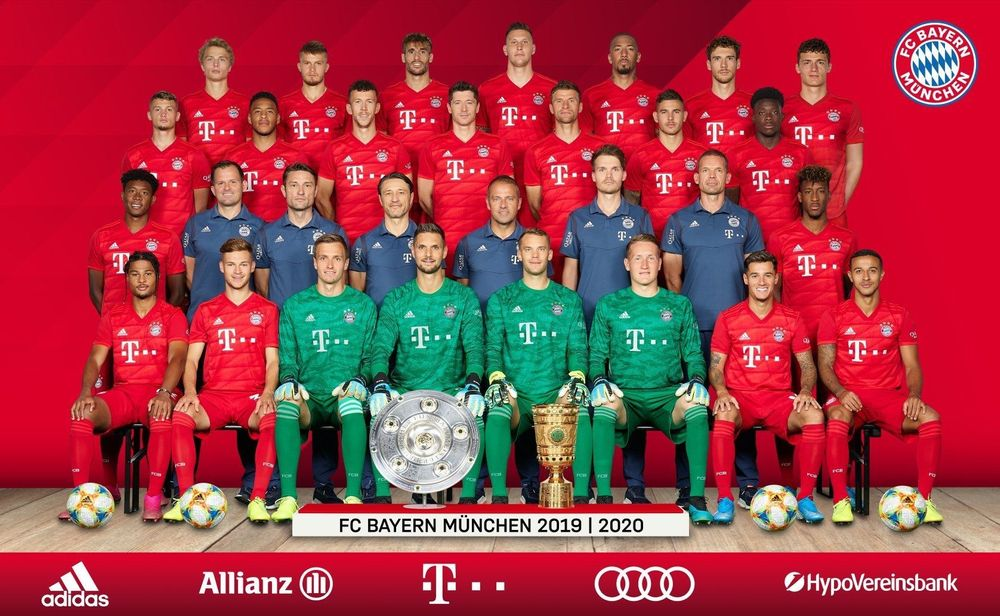

21128최윤호
바이에른 뮌헨

독일의 명문 축구구단
UEFA 3대 메이저
대회 우승[21], 트레블[22], 유러피언컵 3연패[23]를 모두 달성한 두 팀 중 하나[24]이다.
화려한 우승 경력,
수많은 레전드, 고고한 전통, 안정적인 유스 시
스템까지 갖춘 바이에른 뮌헨은 명실공히 독일 최고 명문이자 세계 최고의 명문 구단으로 첫손
꼽히는 메가클럽이다.
트레블의 바이에른 뮌헨
이자,
2회의 트레블을 기록한 유이한 클럽[25]이며 UEFA 챔피언스리그역사상 전대미문의 전승 우승을
달성한 클럽[26]이다. 거기에 11만 여명의 멤버십 회원들을 보유,
FC 바르셀로나에 이어 유럽
최대급의 규모를 자랑한다.

바이에른 뮌헨 1군 선수 목록
1.GK 마누엘 노이어 Manuel Neuer 1986.03.27 193cm, 92kg 주장
4.DF 니클라스 쥘레 Niklas Süle 1995.09.03 195cm, 97kg
5.DF 뱅자맹 파바르 Benjamin Pavard 1996.03.28 186cm, 76kg
6.MF 티아고 알칸타라 Thiago Alcântara 1991.04.11 174cm, 70kg
7.FW 세르주 그나브리 Serge Gnabry 1995.07.14 175cm, 75kg
8.MF 하비 마르티네스 Javi Martínez 1988.09.02 190cm, 81kg
9.FW 로베르트 레반도프스키 Robert Lewandowski 1988.08.21 185cm, 79kg
10.FW 리로이 자네 Leroy Sané 1996.01.11 183cm, 75kg
11.MF 미카엘 퀴장스 Michaël Cuisance 1999.08.16 181cm,74kg
15.FW 얀피테 아르프 Jann-Fiete Arp 2000.01.0 187cm, 78kg
16.FW 레온 다야쿠 Leon Dajaku 2001.04.12180cm, kg
17.DF 제롬 보아텡 Jérôme Boateng 1988.09.03 192cm, 90kg
18.MF 레온 고레츠카 Leon Goretzka 1995.06.02 189cm, 79kg
19.MF 알폰소 데이비스 Alphonso Davies 2000.11.02 181cm, 69kg
21.DF 뤼카 에르난데스 Lucas Hernández 1996.02.14 183cm, 76kg
23.DF 탕기 쿠아시 Tanguy Nianzou Kouassi 2002.06.07 187cm, 83kg
24.MF 코랑탱 톨리소 Corentin Tolisso 1994.08.03181cm, 78kg
25.FW 토마스 뮐러 Thomas Müller 1989.09.13 186cm, 75kg 부주장
26.GK 스벤 울라이히 Sven Ulreich 1988.08.03 192cm, 84kg
27.DF 데이비드 알라바 David Alaba 1992.06.24 180cm, 76kg 2
29.FW 킹슬레 코만 Kingsley Coman 1996.06.13 178cm, 71kg
32.DF 요주아 키미히 Joshua Kimmich 1995.02.08 176cm, 70kg
34.FW 바티스타 마이어 Oliver Batista Meier 2001.02.16 178cm, kg
35.FW 조슈아 지르크제이 Joshua Zirkzee 2001.05.22 193cm, kg
37.GK 알렉산더 뉘벨 Alexander Nübel1996.09.30193cm, 86kg
39.GK 론토르벤 호프만 Ron-Thorben Hoffmann 1999.04.04 192cm, 84kg